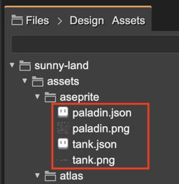
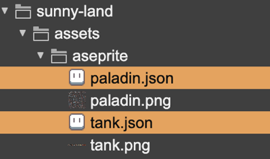
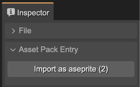
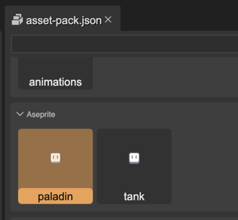
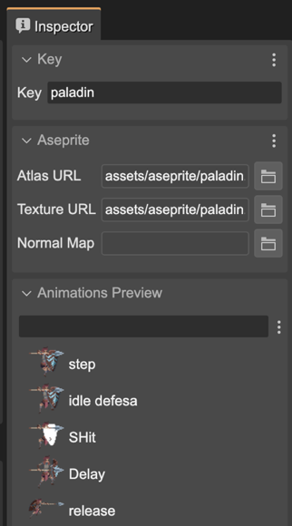
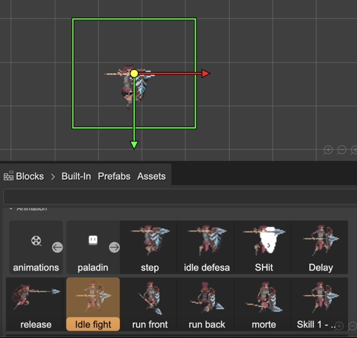
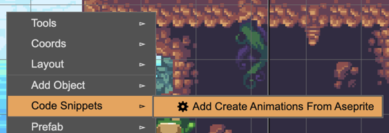
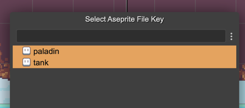

Aseprite support
Aseprite (www.aseprite.org) is a popular software for making pixel art and animations. Phaser provides an Aseprite files loader and a method for making animations with the files.
This is the workflow for working with Aseprite animations in Phaser Editor 2D:
Export the Aseprite files to the Phaser Editor 2D project. You should follow these instructions for exporting the files. The following image shows the atlas and PNG files of the “paladin” and “tank” animations:
Import the Aseprite files in an Asset Pack file. You can select the atlas files (
.json) and import them with the import buttons of the Inspector view: You can check the files are correctly defined in the Asset Pack file:
 Now the Aseprite files are in the Asset Pack file you can access the animations in the different tools of the editor:

Aseprite Code Snippets
In Phaser, before playing an Aseprite animation in a sprite, you should create the animations in the Animations Manager.
For creating the animations you should call the createFromAseprite and pass as argument the Aseprite asset key.
In Phaser Editor 2D you can add this chunk of code in an assisted way:
Right-click on the scene. It opens the context menu. In the Code Snippet menu, select the Add Create Animations From Aseprite option.
It opens a dialog with all the Aseprite asset keys defined in the Asset Pack files of the project. Select the one you want to use in your project. Probably all of them:
Finally, when you compile the scene, it generates these lines of codes at the first lines of the create() method of the scene:
// snippets this.anims.createFromAseprite("paladin"); this.anims.createFromAseprite("tank");
Aseprite exporting instructions
Taken from the Phaser documentation:
To export a compatible JSON file in Aseprite, please do the following:
Go to “File - Export Sprite Sheet”
On the Layout tab: 2a. Set the “Sheet type” to “Packed” 2b. Set the “Constraints” to “None” 2c. Check the “Merge Duplicates” checkbox
On the Sprite tab: 3a. Set “Layers” to “Visible layers” 3b. Set “Frames” to “All frames”, unless you only wish to export a sub-set of tags
On the Borders tab: 4a. Check the “Trim Sprite” and “Trim Cells” options 4b. Ensure “Border Padding”, “Spacing” and “Inner Padding” are all > 0 (1 is usually enough)
On the Output tab: 5a. Check “Output File”, give your image a name and make sure you choose “png files” as the file type 5b. Check “JSON Data” and give your json file a name 5c. The JSON Data type can be either a Hash or Array, Phaser doesn’t mind. 5d. Make sure “Tags” is checked in the Meta options 5e. In the “Item Filename” input box, make sure it says just “{frame}” and nothing more.
Click export.
This was tested with Aseprite 1.2.25.
This will export a png and json file which you can load using the Aseprite Loader